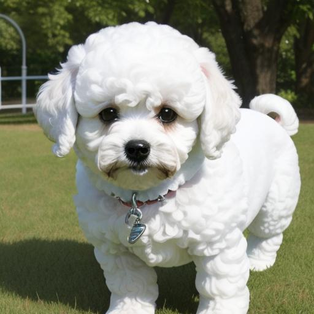
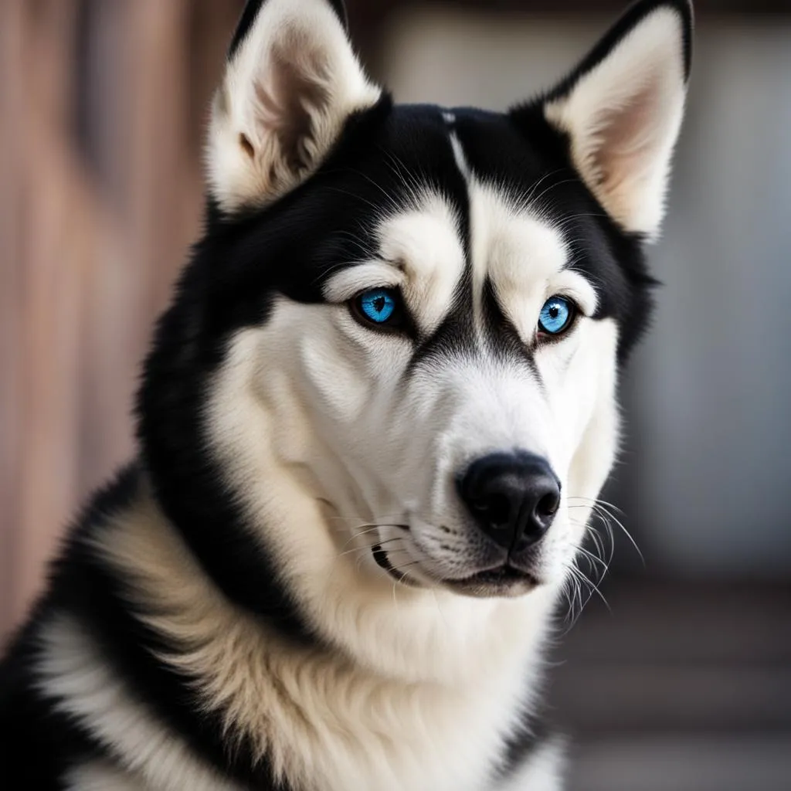
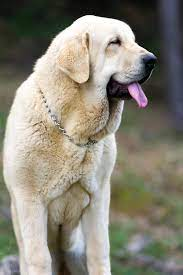

| Razas |
Caracteristicas |
Años de vida |
Imagen |
| Bichón Maltés |
Dulce, cariñoso, inteligente, receptivo y confiado, pequeñosblancos con pelo suave |
12 a 14 años |
 |
| Husky Siberiano |
Es una raza inteligente y gentil, del norte de Siberia y suelen ser blancos, negros y grises |
12 a 15 años |
 |
| Mastín Españ |
El mastín español, también conocido como mastín leonés, es una raza de mastín originaria de España, donde abunda en las zonas rurales |
1 años |
 |
Acceder al formulario 1
Acceder al formulario 3